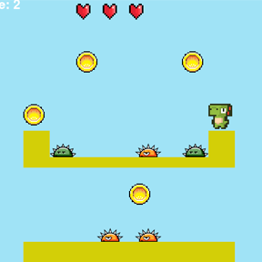
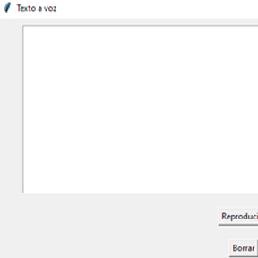
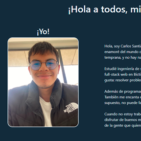

¡Hola a todos, mi nombre es Carlos!
¡Yo!

Biografia:
Hola, soy Carlos Santiago Gongora Ramirez, pero mis amigos me llaman Yuyi. Desde que tenía 8 años, me enamoré del mundo de la programación, y no he parado desde entonces. Comencé a programar a una edad temprana, y no hay nada que me guste más que crear cosas nuevas con código.
Estudié ingeniería de sistemas en la Universidad Distrital Francisco José de Caldas y también hice un curso de full-stack web en Bictia. Todo esto me ayudó a fundar SoftCo, donde puedo poner en práctica lo que más me gusta: resolver problemas y crear soluciones digitales.
Además de programar, soy fanático de los videojuegos. Siempre estoy buscando un buen juego para disfrutar. También me encanta el voleibol; jugar con amigos es una de mis formas favoritas de mantenerme activo. Y, por supuesto, no puede faltar el ejercicio, que me ayuda a despejar la mente.
Cuando no estoy trabajando o jugando, me gusta simplemente parchar con mis amigos, compartir risas y disfrutar de buenos momentos. Para mí, la vida es un balance entre hacer lo que amo y disfrutar de la compañía de la gente que quiero.
Estudié ingeniería de sistemas en la Universidad Distrital Francisco José de Caldas y también hice un curso de full-stack web en Bictia. Todo esto me ayudó a fundar SoftCo, donde puedo poner en práctica lo que más me gusta: resolver problemas y crear soluciones digitales.
Además de programar, soy fanático de los videojuegos. Siempre estoy buscando un buen juego para disfrutar. También me encanta el voleibol; jugar con amigos es una de mis formas favoritas de mantenerme activo. Y, por supuesto, no puede faltar el ejercicio, que me ayuda a despejar la mente.
Cuando no estoy trabajando o jugando, me gusta simplemente parchar con mis amigos, compartir risas y disfrutar de buenos momentos. Para mí, la vida es un balance entre hacer lo que amo y disfrutar de la compañía de la gente que quiero.
Estudios:
- Ingenieria de Sistemas en la Universidad Distrital
- Instituto San Pablo Apostol
- FullStack en Bictia
Logros:
- TercerLugar de Hackaton Wom 2023
- Fundador de SoftCo
Proyectos:

Proyecto Final Modelos 1
Este es un videojuego usando la bilioteca de pygame y usando patrones de diseño
Ve a GitHub!

Text to Voice
Este es un proyecto simple usando la biblioca de pyttsx3 y tkinter para hacer un traductor de voz a texto
Ve a GitHub!

Portfolio
Es este proyecto donde usamos html,css y boostrap para hacer un pequeño borrador de portafolio
Ve a GitHub!